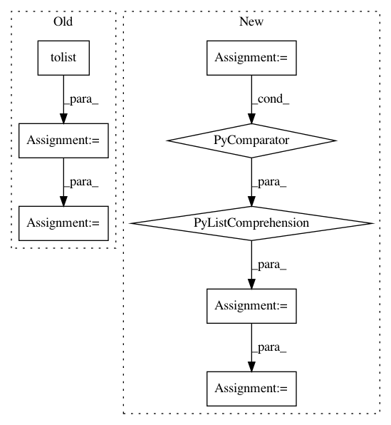

ea2a0bfb9f60f7e03a3ed25244622e0d90b275a5,opennmt/inputters/record_inputter.py,,write_sequence_record,#Any#Any#,67
Before Change
writer: A ``tf.python_io.TFRecordWriter``.
shape = list(vector.shape)
values = vector.flatten().tolist()
example = tf.train.Example(features=tf.train.Features(feature={
"shape": tf.train.Feature(int64_list=tf.train.Int64List(value=shape)),
"values": tf.train.Feature(float_list=tf.train.FloatList(value=values))
}))
writer.write(example.SerializeToString())
After Change
vector: A 2D Numpy array of shape :math:`[T, D]`.
writer: A ``tf.io.TFRecordWriter``.
feature_list = tf.train.FeatureList(feature=[
tf.train.Feature(float_list=tf.train.FloatList(value=values))
for values in vector.astype(np.float32)])
feature_lists = tf.train.FeatureLists(feature_list={"values": feature_list})
example = tf.train.SequenceExample(feature_lists=feature_lists)
writer.write(example.SerializeToString())
In pattern: SUPERPATTERN
Frequency: 3
Non-data size: 8
Instances
Project Name: OpenNMT/OpenNMT-tf
Commit Name: ea2a0bfb9f60f7e03a3ed25244622e0d90b275a5
Time: 2019-03-27
Author: guillaume.klein@systrangroup.com
File Name: opennmt/inputters/record_inputter.py
Class Name:
Method Name: write_sequence_record
Project Name: marcoancona/DeepExplain
Commit Name: 8d7f748e1d8eae7d57444c6e42119dadc47287e9
Time: 2018-02-27
Author: marco.ancona@inf.ethz.ch
File Name: deepexplain/tensorflow/methods.py
Class Name: IntegratedGradients
Method Name: run
Project Name: scikit-learn-contrib/categorical-encoding
Commit Name: 722531f6e47ead8b5a5d2e4427f5bfef319e483b
Time: 2019-03-22
Author: jan@motl.us
File Name: category_encoders/basen.py
Class Name: BaseNEncoder
Method Name: basen_to_integer